Here we will guide you through debugging this labs project and will provide details on how to verify the working of the project.
4.1 Build the project
To build the project please [Right-Click] the project and click Build Project.
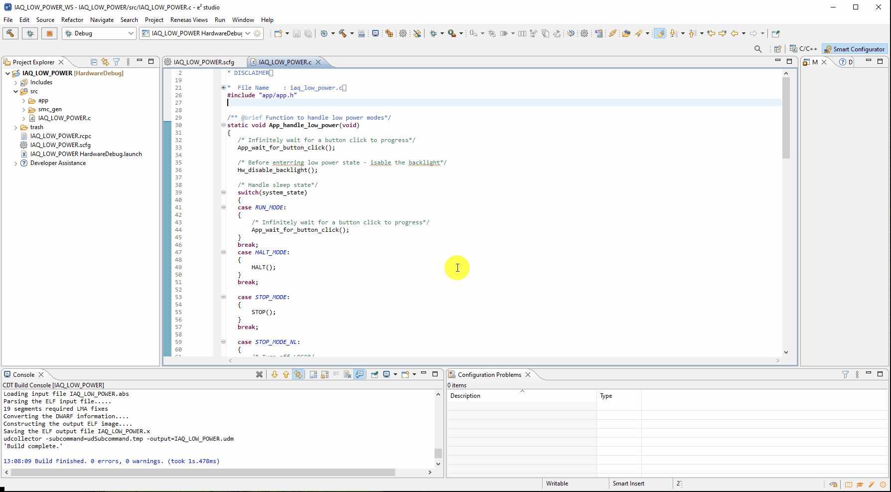4.2 Hardware
Before flashing the board with the image, please ensure a jumper is fitted to the header H1 in positions 1-2
(VBATT-VDD) & that your ammeter is connected such that power in (+) is pin 5 and power out (-) is pin 4 (and pin 3 = GND).
Finally connect the E2-Lite - the user does need to connect batteries for this lab as we will not be keeping the debugger beyond flashing.
4.3 Flashing the image
Now that we have our hardware setup, launch RFP and go [File] → [New Project...].
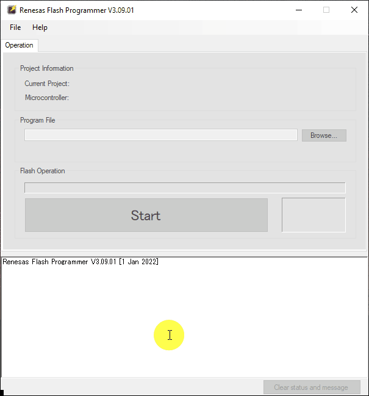And make the following changes:
- Microcontroller: RL78/G2x
- Project Name: Anything Sensible
- Project Folder: Anywhere
- Tool: E2 emulator Lite
Click [Connect]
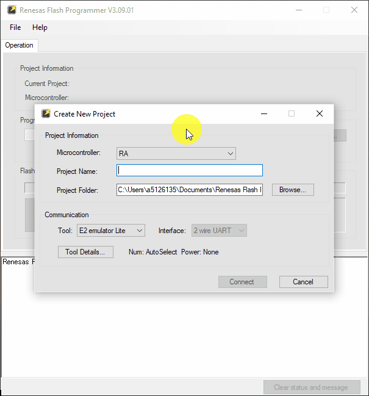Now click browse and navigate to the HardwareDebug folder within your project. Here you will find a file which is <project_name>.mot. Select this file & click [Start].
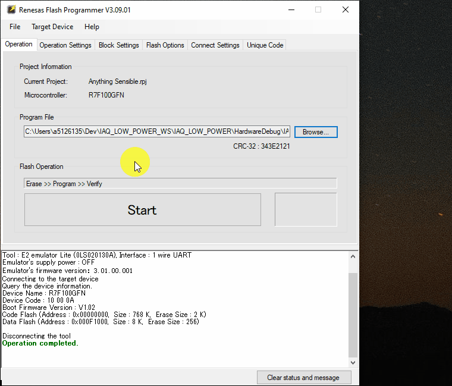Flashing the device is complete, now disconnect the E2 Lite.
4.4 Operating project
Now the application should be running and you will be presented with a display which says "RUN".
By clicking the button on the rotary encoder the backlight will be disabled and the CPU run
current will be presented in your ammeter display.
Example of display before enterring the labelled state:
Display while in the state:
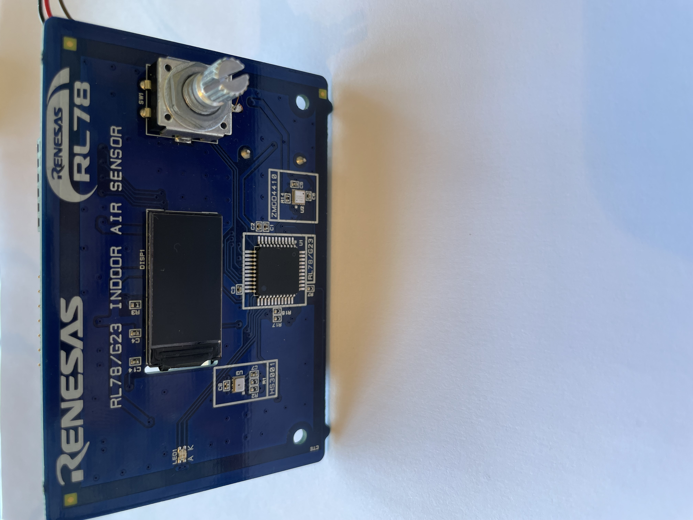For each state, the display will be on presenting details of the state awaiting a button press.
On the button press the state will be enterred. After whcih it will remain in the previously labelled
state until the button is pressed again.
The following states exist and for each the current trace is shown with brief explanation.
Important Note: To cycle the states simply click the button - the reason that while the display is on,
excess current is drawn is the CCIO peripheral when draws extra current when performing it's current
control operation.
- RUN MODE
This shows the running current of the RL78 at 2MHz MOCO driven CPU.
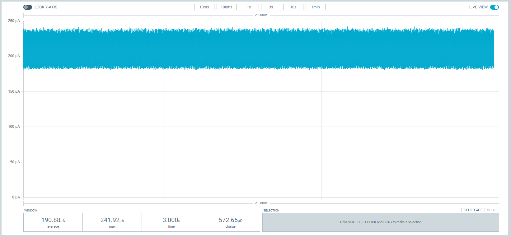 - HALT MODE
This shows the HALT mode current of the RL78 at 2MHz MOCO driven CPU.
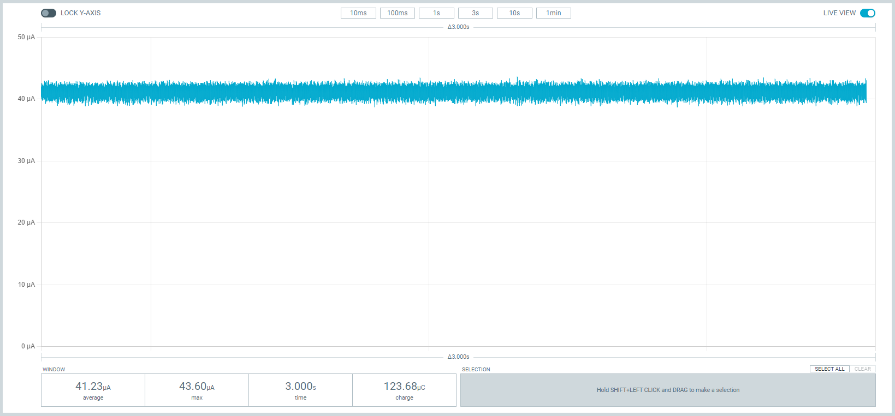 - STOP MODE
This shows the STOP mode current of the RL78.
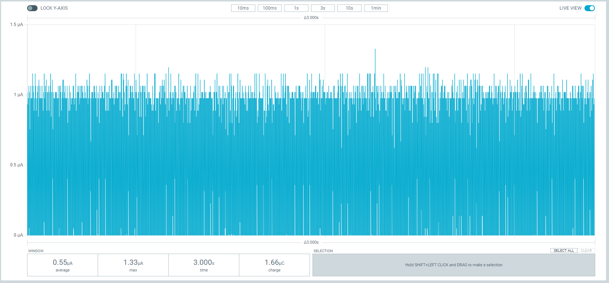 - STOP MODE - No LOCO
This shows the STOP mode current of the RL78, while the LOCO is disabled.
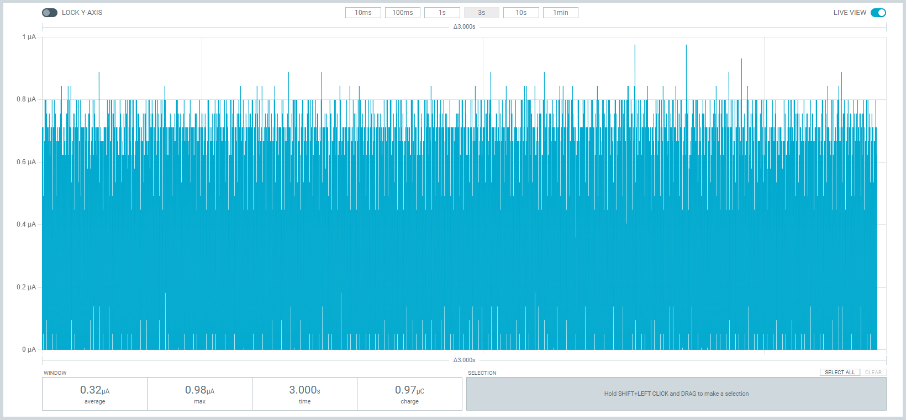 - STOP MODE - No LOCO - RAM Shutdown
This shows the STOP mode current of the RL78, while the LOCO is disabled & and RAM shutdown is enabled.
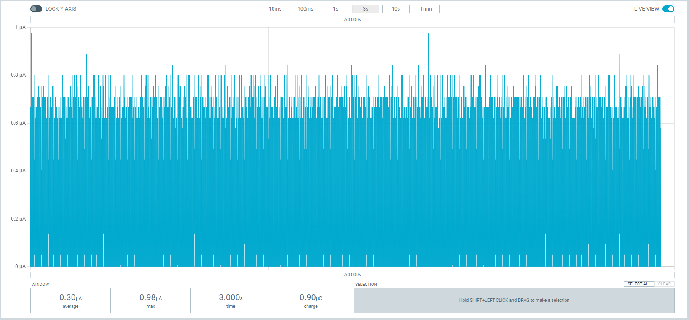 - STOP MODE - Floating IO
This shows the STOP mode current of the RL78, but impeeded by a floating IO input.
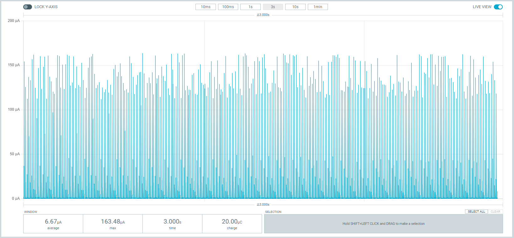 - STOP MODE - CCIO
This shows the STOP mode current of the RL78, but impeeded by enabling the CCIO perihperal.
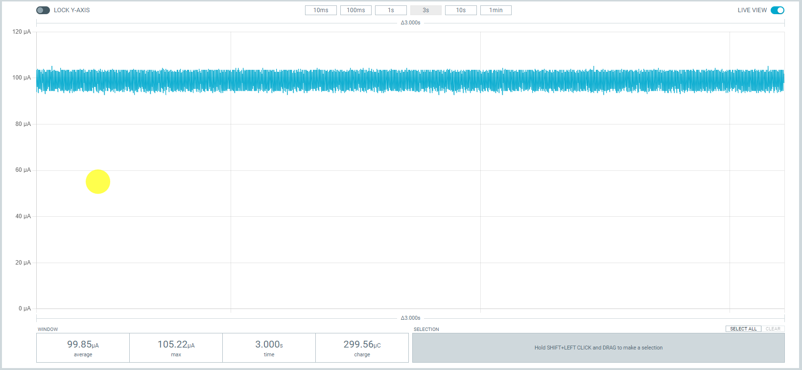